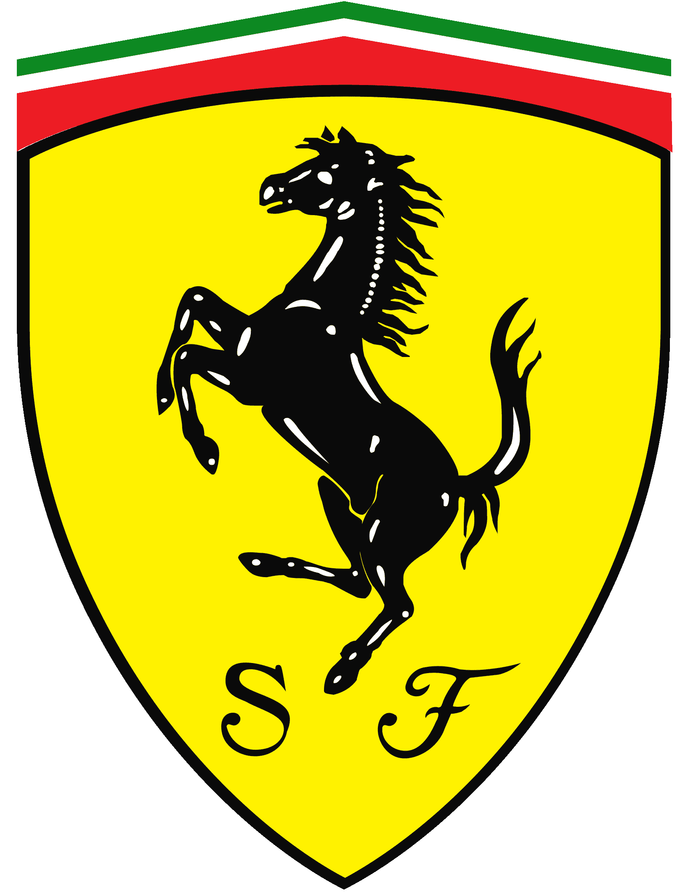
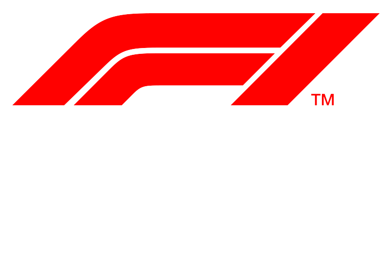
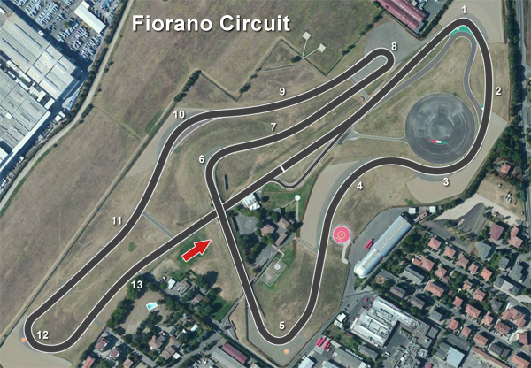
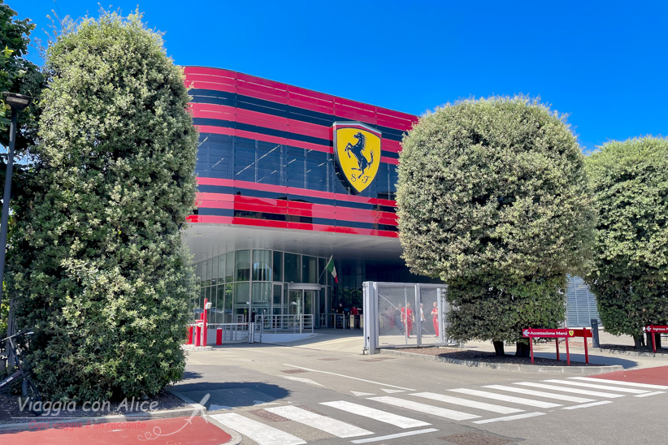

<!DOCTYPE html>
<html lang="en">
<head>
    <meta charset="UTF-8">
    <meta name="viewport" content="width=device-width, initial-scale=1.0">
    <title>Scuderia Ferrari</title>
    <link rel="stylesheet" href="./CSS/stile.css">
</head>
<body>
</body>
</html>
<header> 
<a href="login.html"> </a>


</header>
<nav>
<a href="./piloti.html" style="text-decoration: none;">
    <button class="pulsante"> I nostri piloti</button>
</a>
  

<a href="./teampr.html" style="text-decoration:none;">
    <button class="pulsante"> Il nostro direttore tecnico </button>
</a>
    
    <a href="./storia.html" style="text-decoration: none;">
        <button class="pulsante"> La nostra storia </button>
    </a>
    <a href="./shop.html" style="text-decoration: none;">
        <button class="pulsante"> Shop </button>
    </a>  

</nav>
<div class="testi">
   
        <h1 class="titoli">
            CHI SIAMO <br>
        </h1>
        <p>
             La Scuderia Ferrari è una squadra di corse italiana di Formula 1 con sede a Maranello,
             sezione sportiva della casa automobilistica Ferrari.
             Fondata da Enzo Ferrari nel 1929, nel corso dei decenni
             si è imposta come una delle squadre più note e titolate nell'automobilismo sportivo mondiale.
             La Scuderia Ferrari partecipa al Campionato del Mondo F1 e rappresenta 
             l'essenza dell'eccellenza e della passione nel mondo delle corse automobilistiche.
        </p> 
    

        
</div>


<div class="testi">
   
        <h1 class="titoli">
            IL CAMPIONATO IN CUI GAREGGIAMO <br>
        </h1>
        <p>
            La F1 è il massimo campionato automobilistico al mondo, 10 squadre competono con i propri piloti sui circuiti più importanti di tutto il mondo. Ogni anno cerchiamo di estrapolare il meglio dai nostri meccanici per fornire ai nostri due piloti la macchina più competitiva possibile.
            Per scoprire in che posizione sono i nostri  piloti clicca il logo della F1 qui a destra➜
            
        </p> 
    

        <a href="https://www.formula1.com/en/results.html/2024/drivers.html"></a>
</div>

<section>
    <div class="testi">
   
        <h1 class="titoli">
            IL NOSTRO CIRCUITO <br>
        </h1>
        <p>
            Situato tra le pittoresche colline della provincia di Modena, il Circuito di Fiorano è molto più di una semplice pista di prova:
            è il santuario in cui i sogni dell'ingegneria automobilistica prendono vita.
            Creato negli anni '70 da Enzo Ferrari stesso come la pista privata della Scuderia Ferrari,
            Fiorano ha plasmato gran parte della storia del motorsport e dell'automobilismo di lusso.
            Con una lunghezza di circa 3 chilometri, il tracciato di Fiorano è una sinfonia di curve mozzafiato,
            rettilinei fulminei e sfide tecniche che mettono alla prova le capacità di guida dei piloti e la performance delle nostre iconiche vetture.
            
        </p> 
    
    </div>
        
</section>

<section>
    <div class="testi">
   
        <h1 class="titoli">
            LA NOSTRA CASA <br>
        </h1>
        <p>
            La sede di Maranello è più di una semplice sede:
            è il santuario in cui i sogni di velocità e bellezza prendono forma.
            Qui, tra le strade che portano il nome dei nostri eroi del passato e le mura che raccontano la storia gloriosa della nostra Casa,
            ogni momento è permeato di storia, arte e dedizione alla perfezione.
            All'interno delle mura della nostra sede, si respira l'atmosfera unica della creatività e dell'ingegneria che ha reso Ferrari un'icona nel mondo dell'automobilismo.
            Ogni passo del processo di creazione delle nostre auto è intriso della stessa passione e impegno che ha guidato Enzo Ferrari sin dagli albori della nostra storia.
            
        </p> 
    
    </div>
        
</section>

<br>
<br>
<br>


<footer class="footer">
    

</footer>


    
    

